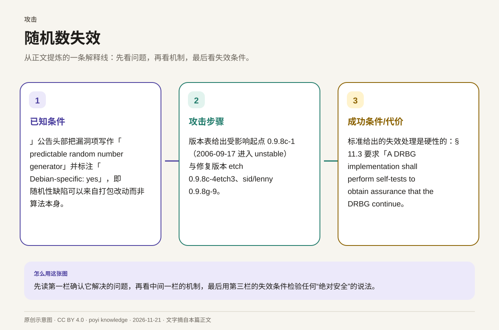
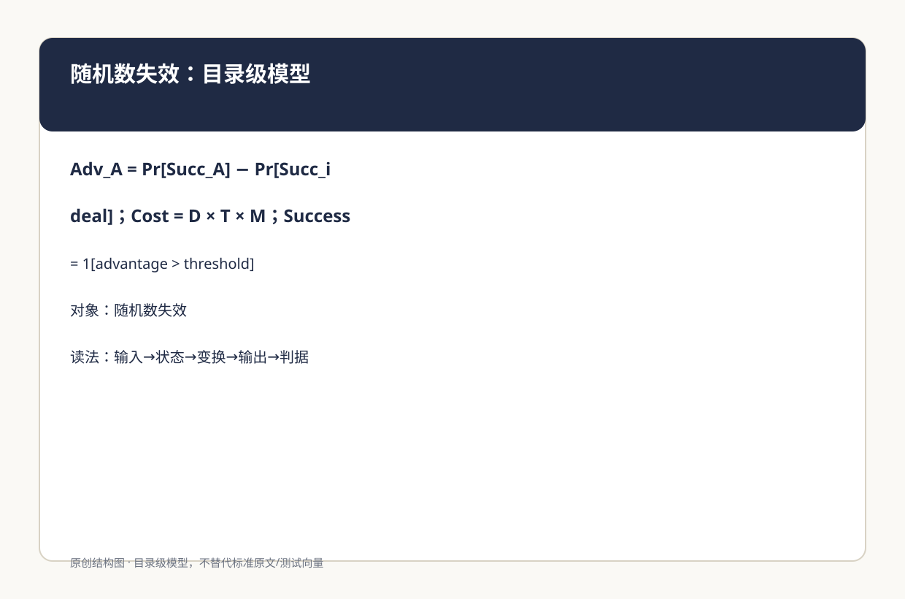

原理与机制
攻击：随机数失效（RNG Failure）。Debian DSA-1571-1 的记录是：「Luciano Bello discovered that the random number generator in Debian's openssl package is predictable.This is caused by an incorrect Debian-specific change to the openssl package (CVE-2008-0166).As a result, cryptographic key material may be guessable。」公告头部把漏洞项写作「predictable random number generator」并标注「Debian-specific: yes」，即随机性缺陷可以来自打包改动而非算法本身。

为什么重要
SP 800-90A Rev.1 把随机性的责任放在种子上：§1 规定「The seed used to instantiate the DRBG must contain sufficient entropy to provide an assurance of randomness」，§8.6.1 要求「Entropy input shall always be used in the construction of a seed」，§8.6.3 要求熵不小于实例化的安全强度，§8.6.5 说明「A DRBG mechanism requires an approved randomness source during instantiation and reseeding」。若种子熵被削掉，确定性发生器就只会输出可预测的位串。
应用与实例
该公告把后果写成清单：「Affected keys include SSH keys, OpenVPN keys, DNSSEC keys, and key material for use in X.509 certificates and session keys used in SSL/TLS connections.Keys generated with GnuPG or GNUTLS are not affected, though.」并强烈建议「all DSA keys ever used on affected Debian systems for signing or authentication purposes should be considered compromised; the Digital Signature Algorithm relies on a secret random value used during signature generation」。版本表给出受影响起点 0.9.8c-1（2006-09-17 进入 unstable）与修复版本 etch 0.9.8c-4etch3、sid/lenny 0.9.8g-9。

边界与攻击面
标准给出的失效处理是硬性的：§11.3 要求「A DRBG implementation shall perform self-tests to obtain assurance that the DRBG continues to operate as designed and implemented (health testing)」，§11.4.2 规定健康测试错误「shall be perceived as catastrophic DRBG failures」，一旦失败「the DRBG shall enter an error state and output an error indicator」，且「The DRBG shall not perform any instantiate, generate or reseed operations while in the error state, and pseudorandom bits shall not be output when an error state exists」。§10.1 只列 Hash_DRBG 与 HMAC_DRBG（加上 §10.2 的 CTR_DRBG 共三个机制），附录 E 说明「The Dual_EC_DRBG has been removed, and section numbers adjusted accordingly」。
历史与背景
DSA-1571-1 由 Florian Weimer 于 2008 年 5 月 13 日发布，对应 CVE-2008-0166，缺陷范围为 2006 年 9 月进入 Debian 不稳定分支的打包改动。NIST 侧的对应演进是 Barker 与 Kelsey 的 SP 800-90A Rev.1（2015 年 6 月），该修订版移除了 Dual_EC_DRBG。两件事共同说明随机数失效既可能来自发行版的改动，也可能来自机制本身的取舍。
逐步示例与核验
形式模型与复算步骤
[\mathrm{Adv}^{\mathrm{attack}}_A(\lambda)=\Pr[\mathrm{Game}_A(\lambda)=1]-\frac12]
随机数失效的公开参数、密钥/随机数与消息；变量说明：λ 安全参数；Game 把攻击目标写成挑战-响应游戏。1.定义挑战与获胜条件。2.给攻击者 oracle 访问。3.计算优势并与目标界比较。边界：公式只覆盖已登记的参数与假设；参数取值、标准版本和实现细节仍以来源为准。
参考出处
- Wikipedia search entry for 随机数失效. https://zh.wikipedia.org/w/index.php?search=%E9%9A%8F%E6%9C%BA%E6%95%B0%E5%A4%B1%E6%95%88
- Handbook of Applied Cryptography (Menezes, van Oorschot, Vanstone). https://www.cacr.math.uwaterloo.ca/hac/